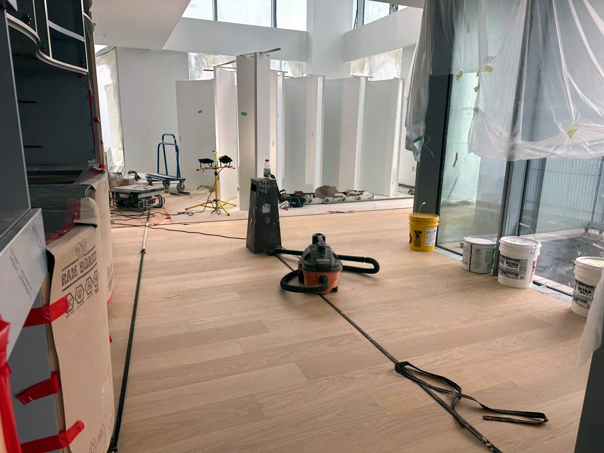
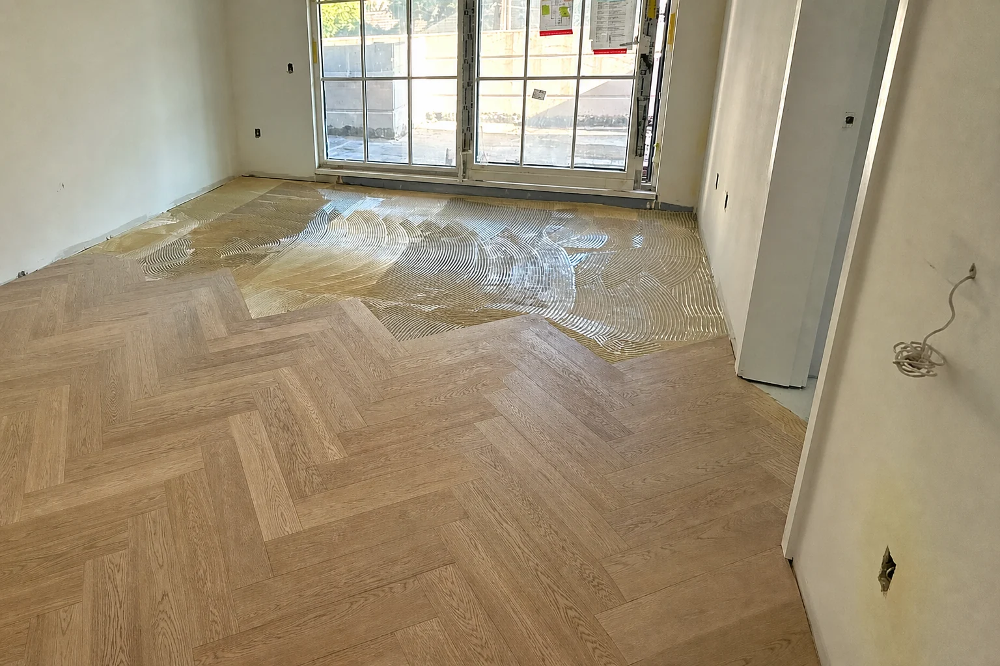
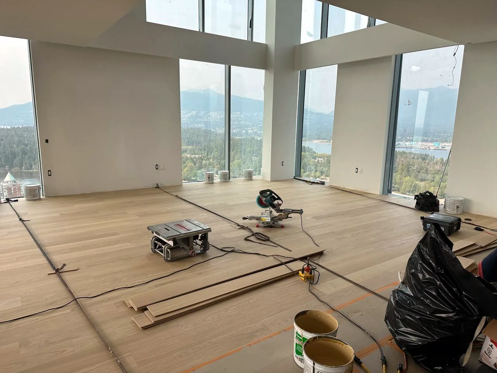
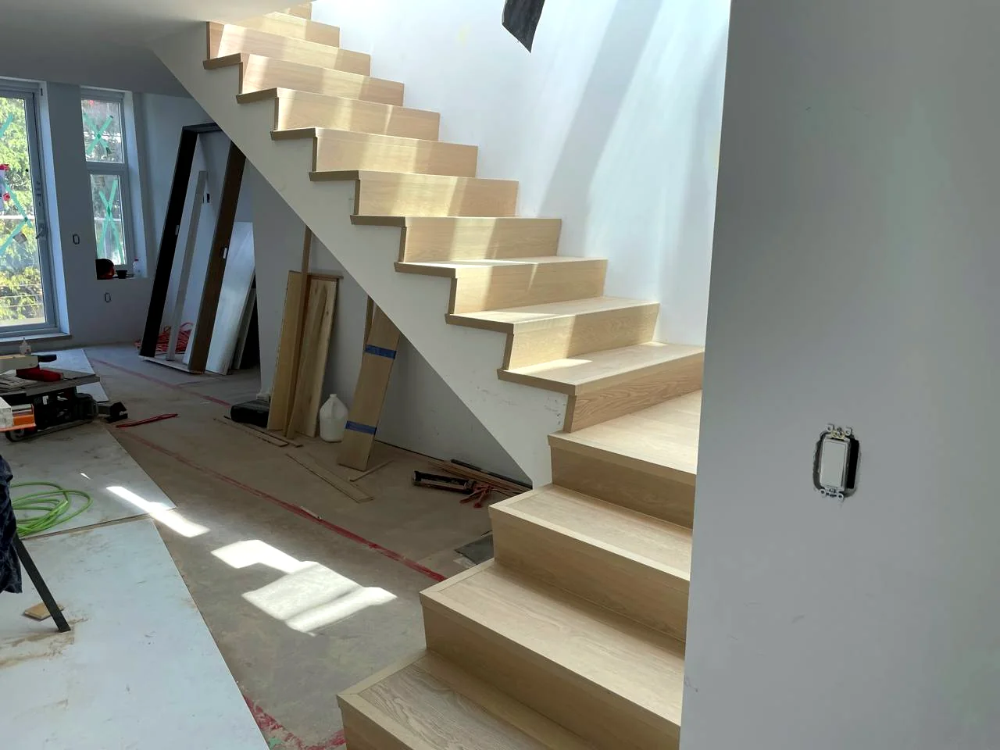

Floating Laminate & LVP
Clean, cost-effective installations where flatness, underlay, expansion, door jambs, cuts, and transitions are handled properly.
Premium Flooring & Floor-Focused Finish Work
Skyecon Contracting Ltd. provides accountable flooring installation and floor-focused finish work for quality-conscious homeowners, designers, builders, and renovation projects. From floating laminate and LVP to glue-down engineered hardwood, wide plank, herringbone, stairs, transitions, and double glue-down systems, Skyecon focuses on the prep, product requirements, and installation method that protect the finished result.
Now focused on the Lower Mainland: Vancouver, the North Shore, Burnaby, Richmond, the Tri-Cities, Surrey, Delta, Langley, Bowen Island, and nearby communities. Select Okanagan and BC-wide projects remain available where the scope justifies travel.

Method + prep + detail
Different flooring systems need different installation methods. A floating click floor can be a smart, clean option when the subfloor is ready. Glue-down LVP and engineered flooring need tighter control over adhesive, spread, open time, pressure, and prep. Double glue-down, wide plank, and herringbone belong in the premium tier, where layout, sequencing, flatness, and product requirements matter even more.
Skyecon helps match the installation approach to the material, the subfloor, the room, and the finish expectations — so expensive material performs like expensive material.
Services
Clean, cost-effective installations where flatness, underlay, expansion, door jambs, cuts, and transitions are handled properly.
More controlled installations for quality vinyl and engineered products, with attention to adhesive compatibility, open time, rolling pressure, substrate prep, and finished detail.
Premium installation work where layout, sound and comfort expectations, visible finish quality, and product requirements justify a higher-control method.
Flat, stable, clean, and suitable before flooring goes down. Prep is what the finished floor rides on.
Treads, risers, nosings, returns, tight-to-tile transitions, baseboards, and floor-focused trim details where every visible line matters.
Flooring-first work for clients who care about the result after furniture, light, doors, cabinetry, tile, and baseboards expose every detail.
Service depth
Glue-down, floating, wide plank, moisture checks, and finish details.
Concrete-aware methods, adhesive planning, and premium prep.
Durable, waterproof flooring installed clean, flat, and tight.
Cost-effective click flooring without cheap-looking shortcuts.
Flat, dry, stable, clean — before the finish floor goes down.
Floor-focused finish details: baseboards, casing, transitions, and selective trim/millwork details.
Treads, risers, nosings, returns, and visible precision.
Cleaner transition options when the tile edge, height, and flooring product allow it.
Process
Good flooring work is mostly the stuff people never notice — because it was done right the first time. Skyecon keeps the process straightforward, organized, and detail-focused from quote to final cleanup.
Transition details
A finished floor is judged at the edges — against tile, stairs, cabinets, walls, fireplaces, and doorways. Skyecon pays attention to those transition points so the whole space feels clean and intentional instead of pieced together.
Tight spacing, consistent lines, and practical finishing details make the difference. Some transitions need a standard profile; others can be cut tighter when the site conditions allow.
Cleaner detail
The right transition depends on tile edge, flooring product, height, substrate, and use. Where a tighter finish makes sense, Skyecon can make that detail cleaner.
View transition pricingRecent Work
Skyecon’s work includes Okanagan homes and demanding Vancouver residential projects where layout, transitions, stairs, and finish quality had to hold up under close inspection.

Multi-unit residential flooring installation completed with a focus on consistency, clean transitions, and efficient coordination across units. Detail work and finish quality stayed the priority from rough install through final handoff.

High-end Vancouver project work completed within one of the city’s recognized residential developments. Precision mattered at every stage — especially around stairs, transitions, layout, and finish integration. That same standard informs Skyecon’s approach to detail-driven flooring and finish work across BC.

Hardwood stair work with matching flooring protected during the build. Careful tread, riser, nosing, and return details where every line stays visible after move-in.
Service areas
Skyecon is taking on flooring and floor-focused finish work across Vancouver, North Vancouver, West Vancouver, Burnaby, Richmond, New Westminster, the Tri-Cities, Surrey, Delta, Langley, Bowen Island, and nearby Lower Mainland communities. We also consider select Okanagan and BC-wide work when the scope, material, schedule, and finish standard justify travel.
Premium flooring, renovations, multi-unit work, stairs, transitions, and subfloor prep.
North Vancouver, West Vancouver, Bowen Island, and nearby communities.
Richmond, New Westminster, Coquitlam, Port Coquitlam, Port Moody, Surrey, Delta, and Langley.
Condos, rentals, concrete slabs, family homes, stairs, LVP, laminate, engineered hardwood, and prep.
Lake-country homes, renovations, moisture-aware prep, clean baseboards, and project timing around busy households.
Practical installs for homes, suites, cabins, rentals, and concrete/slab conditions around OK Falls.
About
Skyecon Contracting Ltd. is built around hands-on flooring installation, clear communication, finish quality, and responsibility for the final result.
The company’s approach is simple: show up prepared, keep the site clean, solve problems properly, and leave behind flooring work that holds up over time. Experience on larger Vancouver projects helped sharpen the standard; the public focus is flooring installation and floor-focused finish work across the Lower Mainland, the Okanagan, Bowen Island, and select BC-wide projects where the scope and finish standard justify travel.
References available on request. WCB covered.
Best fit projects
May not be the right fit
Contact
Whether you are renovating a home, finishing a new build, planning glue-down engineered flooring, choosing between floating and glue-down LVP, dealing with stairs, or correcting work that was rushed the first time, Skyecon can help. Reach out with your project details and Jeremy will look at the material, subfloor, method, scope, and finish standard before quoting.
Call or text for the fastest response. Email is available too, but text is the most reliable quote path.
Quick spam check to protect contact info from robocrawlers.
Phone and email appear automatically after verification.